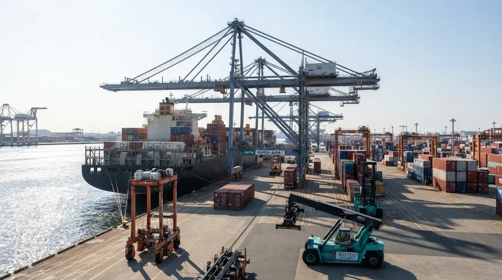
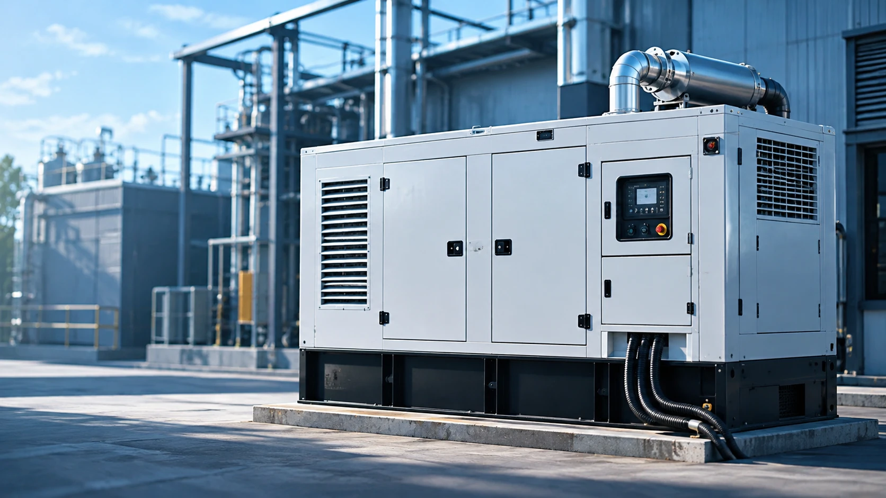

Renewable fuel / SUSTEO
脱炭素を、
現場から動かす。
Scope1・Scope3の削減を、今ある設備から。
サステオは、ユーグレナが提供するバイオ燃料HVOのブランドです。電化が難しい車両、建設機械、発電機、船舶などのGHG排出削減を支援します。
車両・建設機械・発電機・船舶などの利用条件をもとに、削減効果や燃料供給の方法を含め、導入に向けた最適な選択肢をご案内します。
About HVO
HVOとは？
HVO（Hydrotreated Vegetable Oil）は、廃食油や植物油、動物性油脂などを原料に製造される再生可能燃料です。油脂を水素化処理して製造するパラフィン系炭化水素燃料で、軽油に近い性状を持ちます。
そのため、現在お使いのディーゼル車両や建設機械、発電機を大きく変更することなく活用でき、燃料を切り替えることでGHG排出量の削減に貢献します。
| 製品 | 燃料構成 | 主な用途 |
|---|---|---|
| サステオ100 | HVO 100％ | 公道を走行しない建設機械、構内専用機械、発電機など |
| サステオ51 | HVO 51％ ＋ 軽油 49％ | トラック、バス、公道を走行する建設車両など |
Process
原料から、現場まで。
廃棄物・残渣由来の油脂を水素化処理してHVOにし、用途と数量に応じた方法で現場までお届けします。
原料
廃食油（UCO）、植物油、動物性油脂など。廃棄物・残渣由来の原料を活用します。
製造
水素化処理により、軽油に近い性状のパラフィン系炭化水素燃料をつくります。
供給
タンクローリー、ドラム缶、既存タンクへの受入れ。納入先と数量に応じて選びます。
現場での活用
既存のディーゼル車両・建設機械・発電機・船舶で、そのまま使用できます。
供給方法の詳細は供給エリア・供給方法をご確認ください。
Advantage / HVOの優位性
設備更新を待たず、既存資産を活かした脱炭素の選択肢。
サステオは、既存のディーゼル車両・設備を活用しながら、GHG排出削減に取り組みたいお客様に向けたバイオ燃料です。
Scope1削減への対応
燃料転換によって、既存設備を活用しながらGHG排出削減に取り組めます。
既存資産の活用
車両や建設機械、発電機などを大きく更新せずに導入を検討できます。
電化が難しい現場への適用
長距離輸送、建設現場、船舶、非常用電源などの脱炭素化手段として活用できます。
保管・取扱いのしやすさ
軽油に近い性状で、酸化安定性や吸湿性の面で扱いやすい燃料です。
サプライチェーンからの要請への対応
顧客・荷主・発注者からの排出削減要請に対する選択肢として活用できます。
小規模導入から開始可能
対象設備や対象拠点を限定したトライアルから段階的に導入できます。
削減効果の示し方には前提があります
Scope1・Scope3への反映方法は、利用形態と採用する算定基準によって異なります。実際の削減効果は、原料や製造・輸送条件、算定基準などに応じて算定します。固定的な削減率はデモ版では掲載していません。
Use cases
活用方法
サステオの活用方法を、用途やお客様の立場から確認できます。対象となる設備、確認が必要な事項、供給方法は用途によって異なります。
1 / 7
物流・トラック
既存フリートを活用した燃料転換。荷主企業と連携する導入スキームも設計します。
確認する →建設・建設機械
バックホウ、クレーン、ホイールローダー、現場発電機。工事現場単位で導入できます。
確認する →
港湾・荷役機械
コンテナ荷役機械、構内搬送車両、フォークリフト、ディーゼル発電機で検討できます。
確認する →船舶
既存の船舶用ディーゼルエンジンを活用したまま、燃料転換を検討できます。
確認する →
発電機
仮設電源から施設の非常用発電機まで、設備仕様と運用条件に応じて検討します。
確認する →荷主・発注者・デベロッパー
委託輸送や発注工事に伴うScope3削減。費用分担と証憑管理まで整理します。
確認する →製造業（ボイラー）
工場の燃焼設備における燃料転換。対象設備と運用条件をもとに個別に検討します。
確認する →How to adopt
導入判断に必要な情報を、テーマごとに整理しています。
サステオの導入にあたっては、設備との適合性だけでなく、GHG削減効果、供給方法、コスト、法令・税務、環境開示への反映方法などを確認する必要があります。
Knowledge
導入判断に必要な知見を発信しています。
サステオの導入事例から、実証・技術検証、制度・技術の解説まで。あわせて、よくある質問と用語集を掲載しています。
公開日・企業名・導入量・削減率は、一次情報との照合後に掲載します。
導入事例・ナレッジ →Contact
「自社の車両や設備で利用できるか知りたい」
その段階からご相談いただけます。
用途や利用条件に応じて、導入可否、供給方法、費用、GHG削減効果などをご案内します。使用量や導入時期が決まっていない場合でもご相談いただけます。